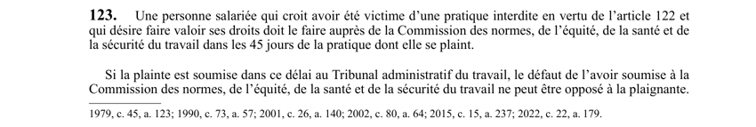

art-123-LNT : plainte pour pratique interdite
Un article du wiki ⚖️ Recueil législatif
En bref
Article qui ouvre le recours de la personne salariée victime d'une pratique interdite au sens de l'art. 122, et en fixe le délai. Ce recours vise la personne salariée.
- Délai de 45 jours de la pratique dont le salarié se plaint pour s'adresser a la CNESST.
- Plainte déposée dans ce délai directement au Tribunal administratif du travail : le défaut de l'avoir soumise a la CNESST ne peut pas être opposé au plaignant.
- Le délai passe a 90 jours pour un congédiement, une suspension ou une mise a la retraite fondé sur l'art. 122.1 (art. 123.1 LNT).
- A distinguer du harcèlement psychologique, dont la plainte se dépose dans les 2 ans de la dernière manifestation (art. 123.6 et 123.7 LNT).
🌐 LegisQuébec · 📄 PDF officiel (page 57)
Texte officiel : capture du PDF
{kind=link}

Toucher l'image pour l'agrandir🔗 Ouvrir a cette page : LNT.pdf : page 57 · texte a jour au 26 mars 2024
Voir aussi
- art-122-LNT : pratiques interdites (représailles) · liste des pratiques interdites : représailles contre le salarié qui exerce un droit prévu par la loi.
- art-123.6-LNT : plainte pour harcèlement psychologique · plainte écrite a la CNESST pour harcèlement psychologique.
- art-123.7-LNT : délai de deux ans pour la plainte · délai de deux ans depuis la dernière manifestation de la conduite.
- art-81.18-LNT : définition du harcèlement psychologique · définition du harcèlement psychologique.
- ↑ Loi : LNT
Pages qui pointent ici (5)
- art-115-LNT : prescription de l'action civile Recueil législatif
- art-122-LNT : pratiques interdites (représailles) Recueil législatif
- art-123.6-LNT : plainte pour harcèlement psychologique Recueil législatif
- LNT Recueil législatif
- Tes heures, tes vacances et tes congés quand tu travailles en rotation Droit du travail